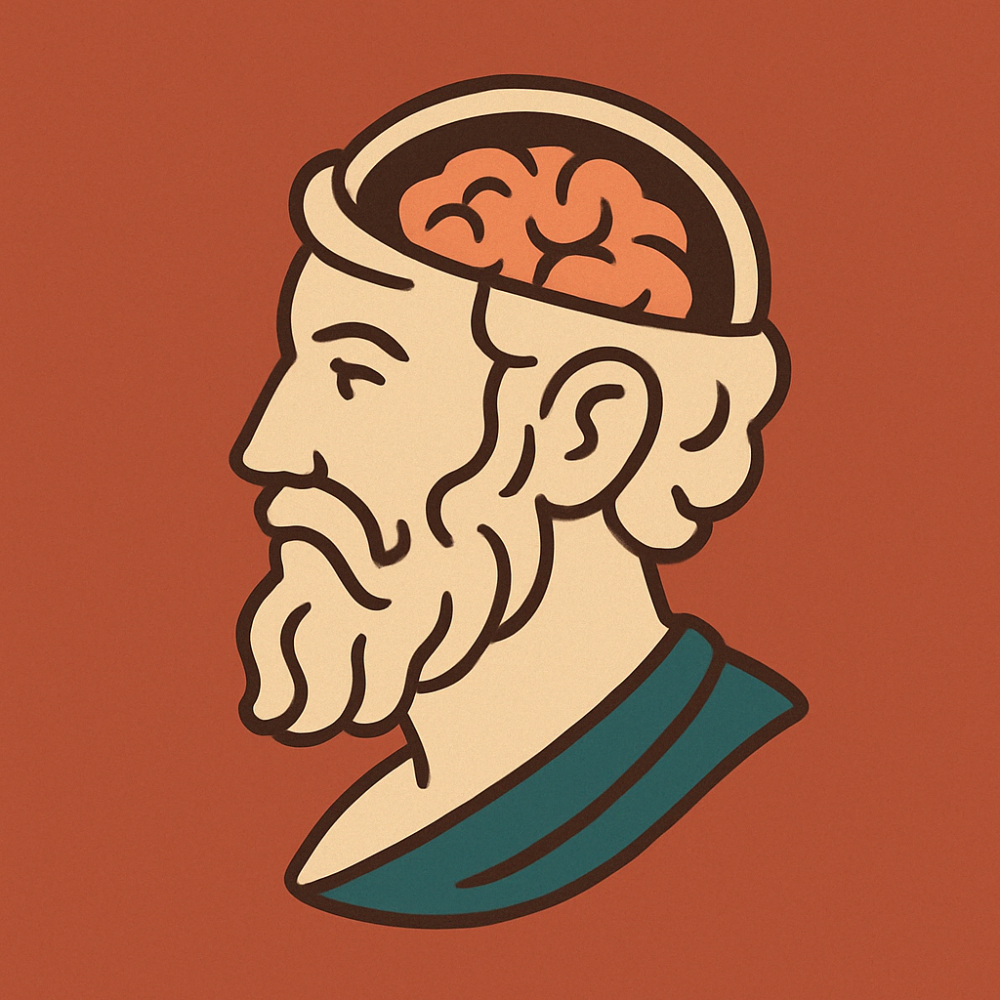

Notebook primo anno
La mente? Questione di neuroni
Le regole del gioco, spiegate seriamente
Gente che pensa da secoli


Come fare scienza senza impazzire (troppo)
Dalla nascita alle prime domande sul mondo
Più difficile di Biologia? Forse sì
Freud l'avrebbe spiegata meglio (o no?)

L'arte di capire la folla (e te stesso)
Numeri, statistiche e... mal di testa?